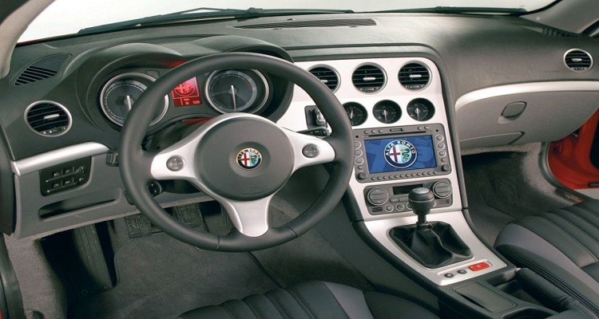
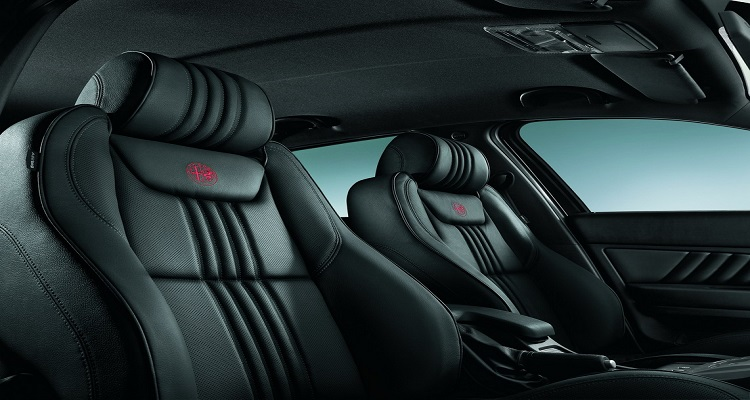

El Alfa Romeo 159 (Proyecto 140) es un automóvil de turismo del segmento D producido por el fabricante italiano Alfa Romeo desde el año 2005 hasta el año 2011. Está construido sobre la misma plataforma que el Alfa Romeo Brera y Spider, existiendo con carrocerías sedán de cuatro puertas y familiar de cinco puertas denominándose esta última Alfa Romeo 159 Sportwagon.
El 159 fue presentado en el Salón del Automóvil de Ginebra de 2005 como sucesor del Alfa Romeo 156, y se fabricó en la fábrica de Pomigliano d´Arco en la ciudad de Nápoles, Italia. Sus principales rivales eran el Audi A4, el BMW Serie 3 y el Mercedes-Benz Clase C.
Se produjeron unas 240.000 unidades del 159, contra 680.000 del 156. La ventas en Europa bajaron de 57.000 en 2006 a apenas 15.000 en 2010, por lo que se dejó de fabricar tempranamente. Su sucesor, el Alfa Romeo Giulia, se comenzó a comercializar recién en 2016.
El 159 tiene numeroso equipamiento de seguridad: control de estabilidad, control de tracción, antibloqueo de frenos, reparto electrónico de frenada, faros bixenon, ocho airbags y asientos especiales contra latigazo cervical. consiguió cinco estrellas en la prueba de protección a pasajeros adultos en choques de EuroNCAP.
El 159 incorpora elementos de equipamiento como sensor de lluvia, sensor de luz, sensor de aparcamiento, asientos regulables eléctricamente, arranque sin llave, control de velocidad de crucero,sistema de navegación y radio con lector de CD en formato MP3 y USB.
 El 159 dispone,de seis motorizaciones distintas. Los gasolina eran tres cuatro cilindros, un 1.8 litros de 140 CV, un 1.9 litros de 160 CV de potencia máxima y un 2.2 litros de 185 CV, y un 3.2 litros con seis cilindros en V de 260 CV de potencia. Los diésel eran un cuatro cilindros de 1.9 litros de cilindrada y 120 o 150 CV de potencia máxima, y un cinco cilindros de 2.4 litros y 200 o 210 CV, todos ellos con turbocompresor e inyección directa con alimentación por common-rail.
En abril de 2007 se incorporaron dos nuevas motorizaciones ,un 1.75 turbo gasolina con 200cv, y un 2.0 diésel de 170 cv.
El 159 estaba disponible con cajas de cambios automática y manual de seis relaciones, y podía equipar tracción a las cuatro ruedas Q4.
| Modelo | Motor | Cubicaje | Torque | Potencia | Comp. Ratio | Años |
|---|---|---|---|---|---|---|
| 1.8 MPI | I4 | 1796 cc | 103 kW (140 CV) @6500 rpm | 175 @3800 rpm | 10,5:1 | 2006-2010 |
| 1.750 TPI | I4 | 1742 cc | 147 kW (200 CV) @5000 rpm | 320 @1400 rpm | 9,5:1 | 2009-2011 |
| 1.9 JTS | I4 | 1859 cc | 118 kW (160 CV) @6500 rpm | 190 @4500 rpm | 11,3:1 | 2005-2009 |
| 2.2 JTS | I4 | 2198 cc | 136 kW (185 CV) @6500 rpm | 230 @4500 rpm | 11,3:1 | 2005-2009 |
| 3.2 V6 JTS Q4 | V6 | 3195 cc | 191 kW (260 CV) @6200 rpm | 322 @3800 rpm | 11,25:1 | 2005-2009 |
| Modelo | Motor | Cubicaje | Torque | Potencia | Comp. Ratio | Años |
|---|---|---|---|---|---|---|
| 1.9 JTDM 8V | I4 | 1910 cc | 88 kW (120 CV) @4000 rpm | 280 @2000 rpm | 18,0:1 | 2005-2010 |
| 1.9 JTDM 16V | I4 | 1910 cc | 110 kW (150 CV) @4000 rpm | 320 @2000 rpm | 17,5:1 | 2005-2010 |
| 2.0 JTDM 16V | I4 | 1956 cc | 100 kW (136 CV) @4000 rpm | 350 @1750 rpm | 16,5:1 | 2010-2012 |
| 2.0 JTDM 16V | I4 | 1956 cc | 125 kW (170 CV) @4000 rpm | 360 @1750 rpm | 16,5:1 | 2009-2012 |
| 2.4 JTDM | I5 | 2387 cc | 147 kW (200 CV) @4000 rpm | 400 @2000 rpm | 17,0:1 | 2005-2010 |
| 2.4 JTDM | I5 | 2387 cc | 154 kW (210 CV) @4000 rpm | 400 @1500 rpm | 17,0:1 | 2007-2010 |